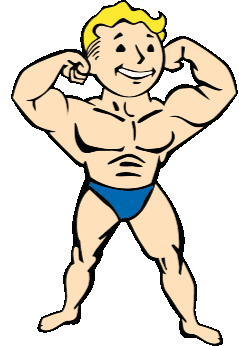
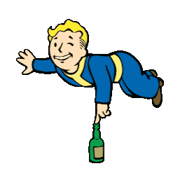
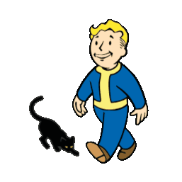

FALLOUT4-WEB
FALLOUT4-WEB
FALLOUT4-WEB
FALLOUT4-WEB
SPECIAL es el sistema de atributos en que se basa toda la Saga Fallout, con excepción de Fallout: Brotherhood of Steel. "SPECIAL" es el acrónimo para Strength, Perception , Endurance, Charisma, Intelligence, Agility y Luck (en español: Fuerza, Percepción, Resistencia, Carisma, Inteligencia, Agilidad y Suerte).
Determina la capacidad de tu personaje para llevar y usar armas pesadas, causar daño cuerpo a cuerpo y llevar más objetos en su inventario.
Afecta la capacidad de tu personaje para percibir enemigos y objetos en el entorno, aumentando la precisión en el combate y mejorando las habilidades relacionadas con la percepción.
Determina la salud máxima de tu personaje y su resistencia a daños y enfermedades. También influye en la resistencia al agotamiento y la capacidad para sobrevivir en ambientes hostiles.
Afecta la capacidad de tu personaje para interactuar con otros personajes, persuadir, negociar y liderar. También influye en las opciones de diálogo disponibles.
Determina la eficacia de tu personaje en el uso y mantenimiento de tecnología, así como su capacidad para aprender y mejorar habilidades a lo largo del juego.
Afecta la velocidad de movimiento, la recarga de acción, la capacidad de esquivar ataques y del sigilo.
Influye en la probabilidad de éxito en acciones aleatorias, encuentros inesperados y la calidad de los objetos encontrados.
